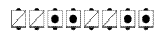
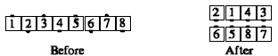

From a tidal line or wave: The people marked the same (dots and slashes) work together and do the call. The centers move over to work with the ends, and finish the call near them. This adjustment is done during the first part of the call, rather than being done before the call starts.

Stretched Wave Recycle:

Stretched Box calls are done from parallel lines, waves, and columns.